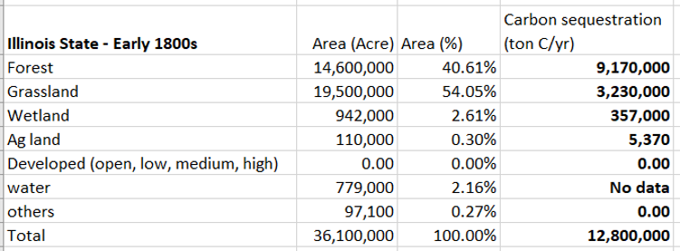
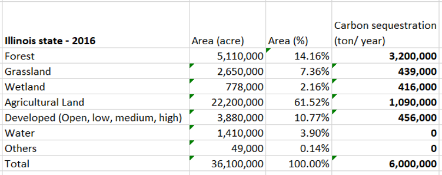

The above map shows how landcover has changed from the 1800s to today. Before Europeans arrived in Illinois, most of Illinois was covered in prairie, while the southern portion of the state was heavily forested. Today, more than 60% of land is used for agriculture and 10% of the state is developed as cities, towns and roads.
The map of historic landcover is based on data from the Public Land Survey; current landcover is from the US Geological Survey's National Landcover Database.
View the changes by moving the slider the slider; the landcover in the 1800s shows on the left side of the map and today's landcover is shown on the right. Zoom in, using the + or - buttons to see specific places in detail.
Less than 1% of the prairies and wetlands remain. Forests have also decreased in much of the state. Carbon sequestration has decreased by more than 50% since the 1800s.
The table below shows the acreage of different ecosystems in Illinois in the 1800s, along with estimates of carbon sequestration for each ecosystem and for the state as a whole.

The table below shows the acreage of different ecosystems in Illinois today, along with estimates of carbon sequestration for each ecosystem and for the state as a whole.
